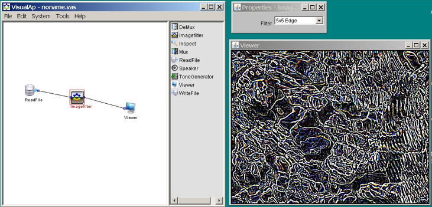

[Main Index]
Tutorial
The scope
of this paragraph is learn how to build a simple system, step by
step:
- Launch
the application VisualAp, or select File->New if it is already
running
- Select
in the toolbox the ReadFile component, move and click
the mouse pointer in the left side of the workspace: the component
ReadFile is placed in the left side of the workplace
- Double-click
the ReadFile component in the workspace: the properties window for
ReadFile appears.
- In
the properties window press the “Choose Filter” button,
select the file “sassi.jpg” and press “Done”.
- Now
select in the toolbox the ImageFilter
component, move and click the mouse pointer in the center of the
workspace: the component ImageFilter is placed in the workplace.
- Connect
the output pin of ReadFile to the input pin of the ImageFilter
component.
- Now
select in the toolbox the Viewer component,
move and click the mouse pointer in the right side of the workspace:
the component Viewer is placed in the workplace.
- Connect
the output pin of ImageFilter to the input pin of the Viewer
component.
- Now
check the system: System->Check, you should get a dialog with
“System Check Passed” answer.
- Eventually
you can run the system: System->Run, a new window pops-up with
the inverted image.
- Double-click
the ImageFilter component in the workspace: the properties window
for ImageFilter appears. You can change the effect to 5x5Edge.
- Run
the system, again System->Run, the image will change due to the
new filter.

Main index